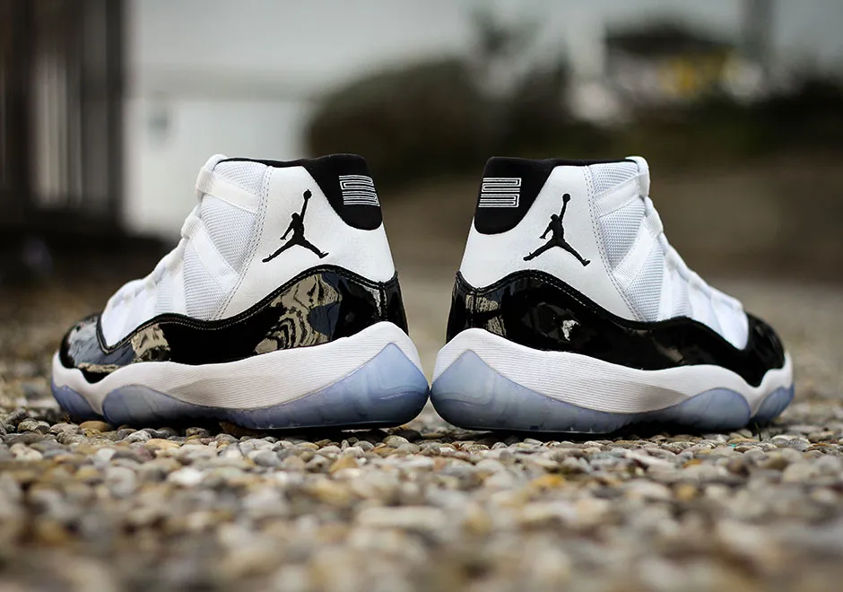
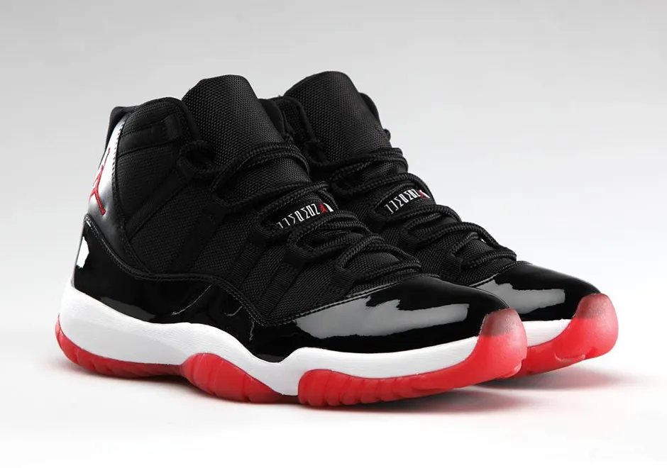

The Air Jordan XI made its world debut on May 7, 1995 when Michael Jordan wore the “Concord” colorway for Game 1 of the Eastern Conference Finals versus the Orlando Magic. The shoe caught attention right from the beginning, thanks to the glossy patent leather upper that was unlike anything seen on court up to that point. The shoe also received media coverage after the NBA had issues with it not meeting the uniform guidelines since its predominantly white upper didn’t match the black sneakers the rest of the Bulls were wearing for the playoffs. This only increased the buzz around the shoe, beginning its long and storied history. After the NBA took exception to the Concord colorway, for the rest of the series Michael switched to the black colorway we now know as “Space Jam”—thanks to its appearance in the beloved movie.
Another one of Tinker’s perfect balances of performance and style, the Air Jordan XI was the first Jordan model to feature a carbon fiber midfoot support shank, a technology that would be utilized in almost every game shoe to follow (Reebok actually beat Nike to the support shank concept with their Graphlite plate in shoes like the Instapump Fury and Shaq Attaq). Up top, the shoe also introduced durable and breathable ballistic nylon mesh to basketball shoes. The XI featured a full-length encapsulated Air unit for cushioning, marking the last Jordan shoe to use standard Air after the XII would debut Zoom Air to the Jordan line a year later. Recalling an important detail of Air Jordans V and VI, clear rubber was back on the outsole in a larger dose than ever to complete the XI’s remarkable design.
Along with the standard Air Jordan, the shoe also originally released in a low-top edition dubbed the Air Jordan XI Low IE with a varied patent leather-less construction. The red-headed stepchild of the Air Jordan XI, the low-top featuring elephant print (for the OG’s, only the white colorway had elephant print, but retro versions of the black/red pair also have it) and die-cut mesh paneling has always been kind of a mysterious member of the Air Jordan family. In fact, nobody can even officially confirm what IE stands for. Despite its peculiarities, the IE was actually worn on court by Michael Jordan in 1996 and has had success as a retro release throughout the years.
